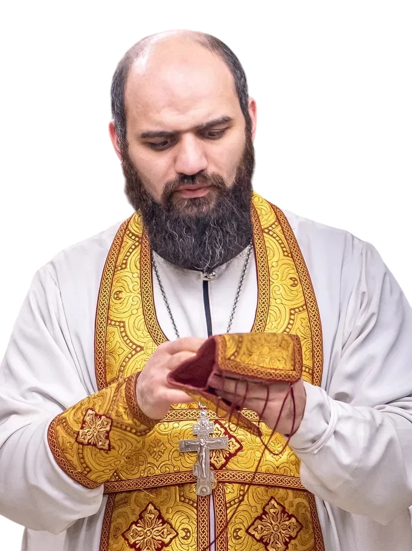
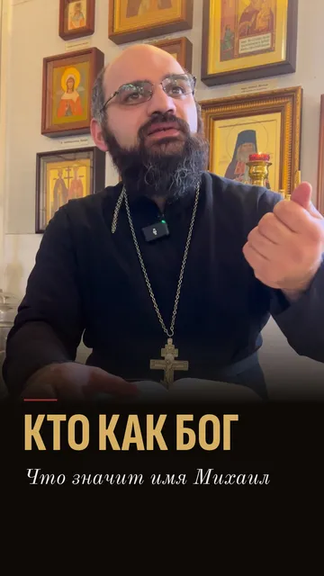
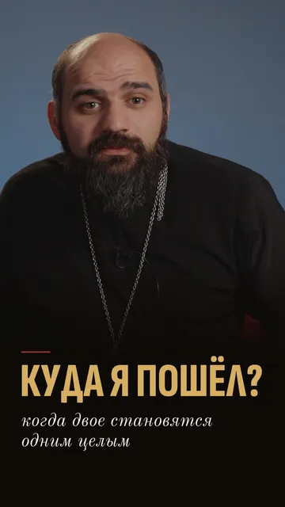
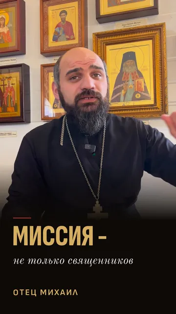
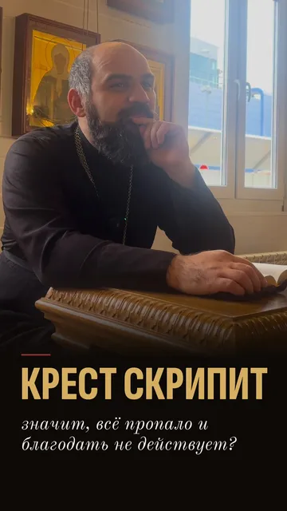
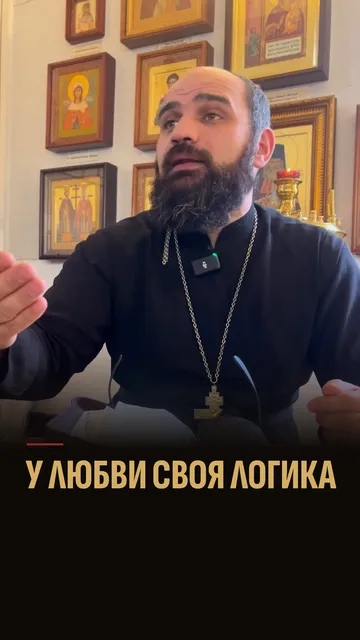
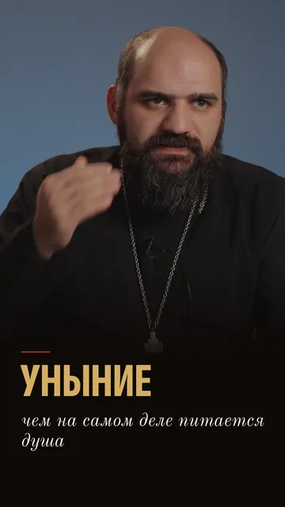
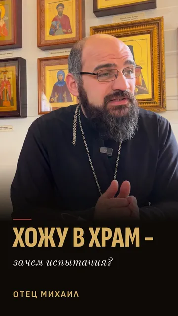
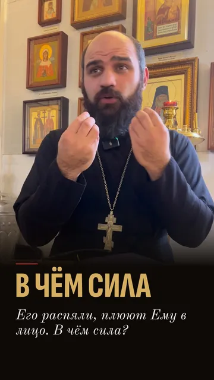

Из четырёх бесед мы сделали 32 коротких ролика, а три беседы подготовили целиком. К каждому ролику готовы обложка и тексты для четырёх площадок.
Всё лежит в одной папке. Монтировать, придумывать названия и подбирать картинки больше не нужно.
Игорь Ильин«Бизнес по-русски»
Что в папке








Крест, Авраам, Театр, Камень, Повод. Сама беседа целиком уже выложена на YouTube.
Самый дорогой, Герой или подлец, Упражнение, Одна парта, Измена, Уныние, Исцеление.
Взрослые дети, Бизнес, Испытания, Безвыходность, Бесы и ад, Бесы, Самоубийцы, Миссия, Дева Мария.
Кто как Бог, Третьего не дано, Агнец, Который - Лев, Может ли война быть справедливой, Как перестать осуждать, У любви своя логика, Чего хочет Бог и чего хочет бес, Повод для Бога, Бесы губят потихоньку, Одного средства нет, Жертва Авраама.
Как выложить
Откройте папку нужной беседы. Рядом с каждым роликом лежат его обложка и PDF с текстами.
В нём тексты отдельно для каждой площадки: YouTube, ВКонтакте, Telegram и Instagram*. Скопируйте нужный.
Загрузите ролик, вставьте текст, поставьте обложку. Так же - в остальных площадках.
Главное
Если просто регулярно выкладывать эти ролики в каждую социальную сеть, это уже будет очень большой результат.
Снимать новое и что-то изобретать не нужно. Одна последняя беседа дала 11 роликов. Если выкладывать по одному в день, 32 роликов хватит больше чем на месяц.
Короткий ролик человек не ищет, он его листает. Каждый ролик, выложенный в четыре площадки, увидят люди, которые сами Вас никогда не искали.
Слово уже сказано и записано. Осталось дать ему дорогу.
Дальше
При этом важно понимать: выкладывать каждый ролик руками в четыре площадки - это часы, которые лучше отдать службе и людям.
Поэтому дальше мы настроим сервисы автовыгрузки. Ролики будут сами уходить во все площадки по расписанию, и делать это руками каждый раз не придётся.
Об этом поговорим, когда Вы снова начнёте публиковать.
Игорь Ильин«Бизнес по-русски»
* Instagram принадлежит компании Meta, признанной в России экстремистской.